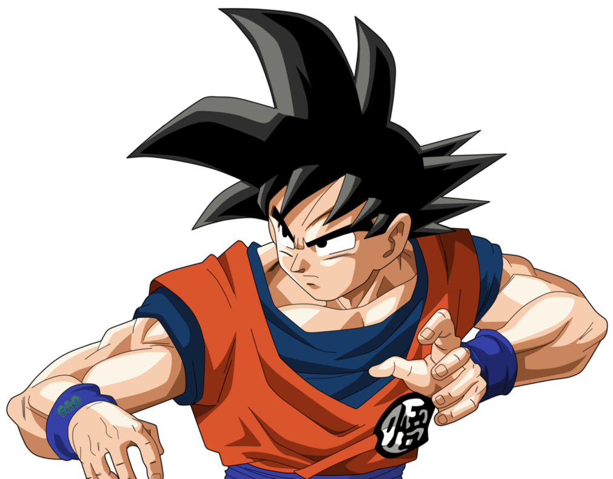

Goku
El es el protagonista de la obra qye vamos a ir conociendo a lo largo de la historia! Lo conocemos cuando recien era un niño y lo vemos avanzar por un largo camino en el cual vemos como aprende a ser un digno artista marcial gracias a todos los maestros que lo acompañaron, sin embargo eso no es todo, ya que con sus conocimiento en combate, él se enfrenta a grandes amenazas. Y con el pasar del tiempo descubrimos incluso que no es un humano

Vegeta
El es el acutual co-protagonista junto con Goku en Dragon Ball Super. El es un personaje muy orgulloso que lo conocemos siendo alguien despiadado y un asesino en toda regla. Sin embargo a lo largo de la historia vemos como va teniendo una evolucion mental y esa horrible personalidad que manejaba hoy por hoy es solo un recuerdo

Piccolo
En su otra vida fue uno de los mayores enemigos de Goku, sin embargo renacio como alguien no tan malo, que con el paso del tiempo se volvio uno de los compañeros mas bondadosos y amables que nos acompaña en esta gran aventura

Gohan
El es el hijo mayor de Goku, que lo conocemos con tan solo 4 años y vemos como el niño lloron que vemos al inicio termina siendo uno de los personajes mas queridos por toda la comunidad, tenienido uno de los momento mas increibles en su serie!

Krillin
El es el mejor amigo de Goku que al inicio de la historia era su mas grande rival, sin embargo el ser un humano presento unas grande limitantes en su desarrolo y hoy por hoy es solo un compañero sin mucha importancia